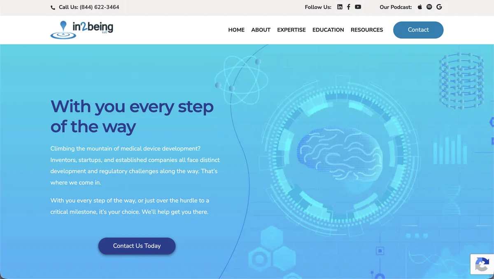
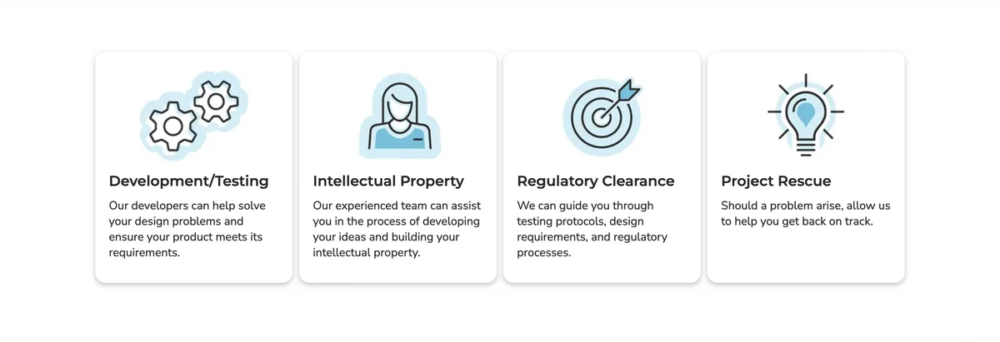
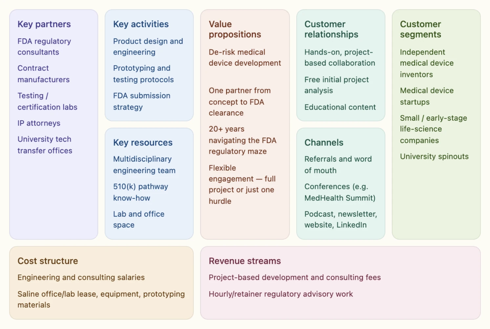
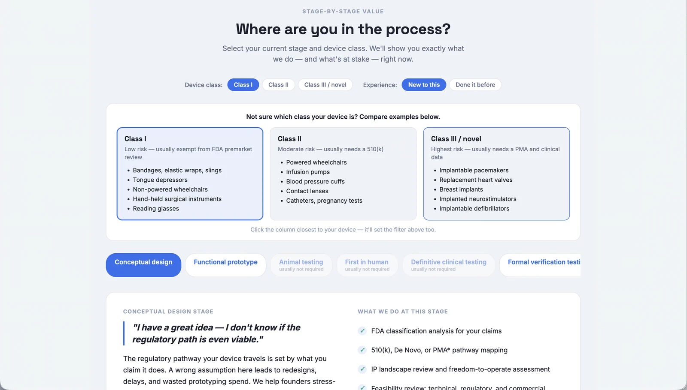
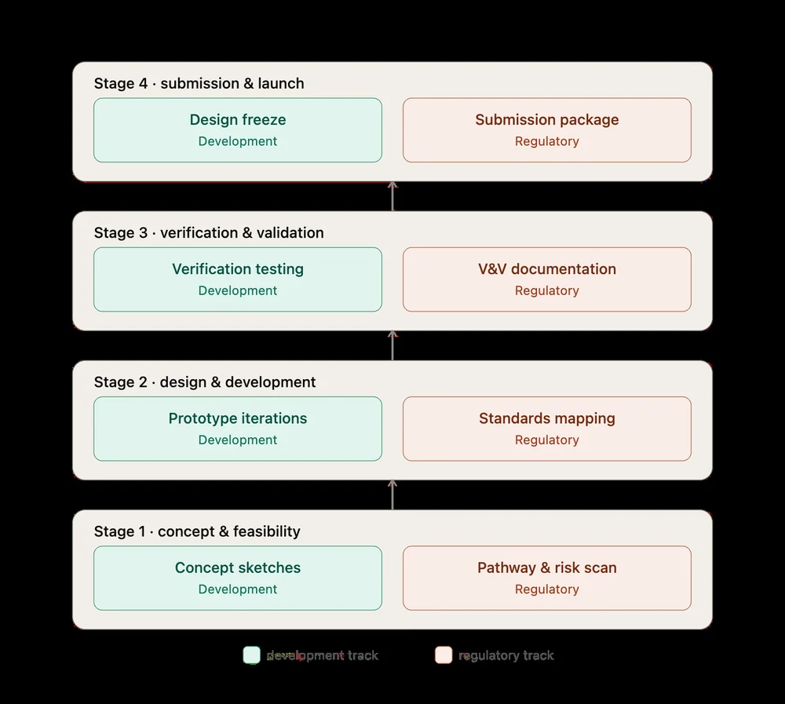
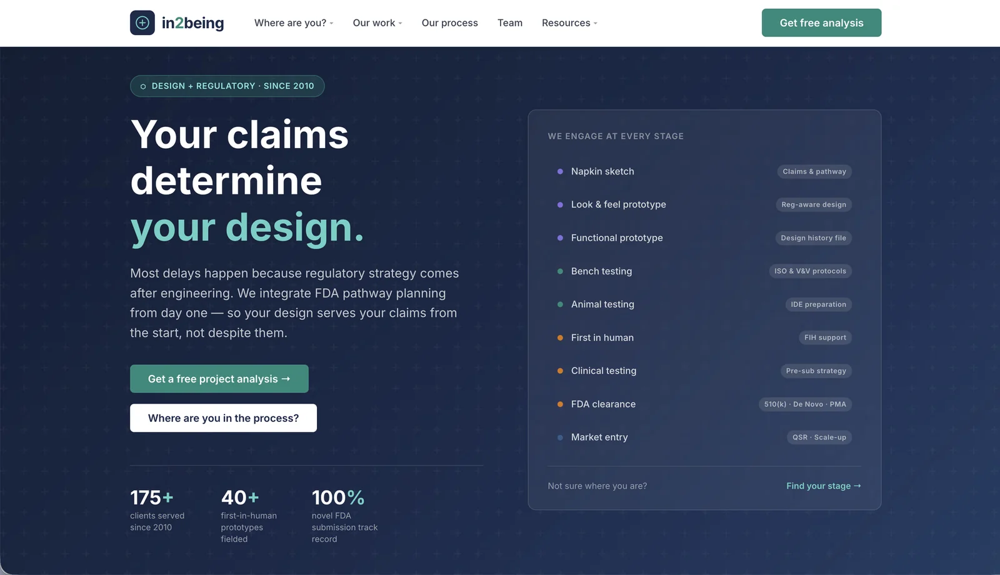
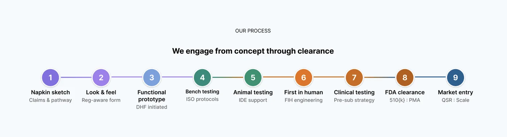

From “clients are confused” to better questions at onboarding
A medical device consultancy whose clients knew only a fraction of what it could do. I turned stakeholder research into six areas of client confusion that the team now uses to guide its onboarding questions.
Clients didn't consistently understand what in2being could do, and often trusted its advice only after a misstep had cost them.
what I did
Ran 16+ interviews with 12 people, built a six-part taxonomy of client confusion, ran a business analysis, and designed two interactive concepts plus a usability plan.
where it stands
The team now uses the areas I identified to guide its questions when onboarding new clients. The design concepts and usability plan haven’t been put to use yet. They may be after the firm’s first website update.
my role
I led the research and strategy work from discovery through recommendation.
Business Model Canvas, SWOT, competitive analysis, client segmentation
Design
Interactive process tools, value build map
Validation
Usability-testing strategy
“Tina's contributions helped shape an updated marketing approach that we are now implementing.”
Founder, in2being
Mile 1 · Sit with the problem
Clients knew a fraction of the firm
in2being is a medical device consultancy that does both product development and regulatory work. It already explained both on its website and in client conversations. Even so, clients didn't consistently understand what the firm could do, and they tended to trust its recommendations only after a different approach had cost them time or money.
So the job wasn't to add more information. It was to make the value that already existed easier to see. To get there, I needed to know:
What does the team believe clients misunderstand, and where does it show up?
When do clients start to trust in2being's advice, and what gets them there?
Is this only a messaging problem, or something in how the business works?

Before: the homepage promised help every step of the way

and listed the services as four separate cards
Mile 2 · Listen to real people
Starting inside the firm
Before I could understand clients, I needed to know how the team saw its own work. I ran 16+ interviews with 12 people across the firm, including repeat sessions with the founder, to map the internal mental model, then grouped the notes in FigJam to find patterns across conversations.
Stakeholder interviews16+ interviews with 12 people, including repeat sessions with the founder
Affinity synthesisPatterns across interviews, grouped in FigJam
Perception taxonomyThe recurring kinds of client confusion
Business analysisBusiness Model Canvas, SWOT, competitor analysis and client segmentation, to test whether this was only a messaging problem
“at most a quarter”One stakeholder's estimate of how much of in2being's work clients actually knew about.
what I heard
“They think we only do one of the many things we do — regulatory, or prototype builds, or electronics, or mechanical, or testing.”
“They understand a quarter of what we do — Regulatory or Development. They don't understand what that half is needed… if they've had a medical device business [before]. [They] understand half of what your business does, and of that half they understand half of that.”
“A lot of our job is in education. Our clients are primarily startups, their budget is very limited… we come from startups so we understand the pressures they're under.”
From stakeholder interviews, as I grouped them in FigJam
Was it only a messaging problem?
To find out, I mapped the business itself: a Business Model Canvas, SWOT, competitive analysis and client segmentation. It wasn't only messaging.

Proposed Business Model Canvas, built from public sources. The team may weight it differently.
Mile 3 · Find the insight
Six kinds of confusion, one root cause
The same misunderstandings kept surfacing, interview after interview. I sorted them into six categories the team can use to spot a misaligned client early.
Scope & breadthClients underestimated how much in2being could handle.
Timeline & paceClients didn't understand how the process unfolded.
Process rigorThe depth of the process wasn't obvious.
CommunicationExpertise could read as more technical than approachable.
Budget expectationsProspects formed budgets without seeing the full process.
TerminologyIndustry language added another layer of confusion.
Underneath all six was trust. Clients often didn't recognize or believe in2being's recommendations until another approach had already cost them. That changed the problem statement.
before
Clients don't value the integrated model.
after
Clients may not clearly see how development and regulatory work relate.
Mile 4 · Admit what I got wrong
“Clients are confused” wasn't actionable
My first read was that clients were simply confused. But confusion in general doesn't tell anyone what to change.
Naming how they were confused, and when they began to trust in2being, was actionable. The more useful question became what evidence would get clients to that trust sooner.
the traffic drop that wasn't
While reviewing analytics, I found a spike of bot and referral spam in GA4 that could naturally be misread as a real traffic drop. I flagged it as a data-quality issue so decisions wouldn't rest on bad numbers.
Mile 5 · Make it work for them
Making the integrated model visible
research finding
Clients couldn't see where they were in the development process.
design response
I made the process explorable.
Concept 1Client journey tool
A stage-by-stage walk through a device's path, from conceptual design to market entry. Visitors pick their device class and experience level, then see what in2being does, and what's at stake, at their stage. I built it as a working HTML prototype in in2being's brand colors.

Working prototype: choose your device class and experience, then step through the stages
Nine stages from Conceptual Design to Market Entry
Device-class filter for Class I, II and III
Technology Readiness Level toggle
Experience toggle that switches technical language to plain English
Concept 2Value build map
A bottom-up view that stacks development and regulatory work stage by stage, from concept and feasibility to submission and launch, so they read as one build instead of two separate tracks.

Each stage pairs a development step with its regulatory step
Concept 3Leading with the integrated model
To put the positioning recommendation into practice where prospects first meet the firm, I used AI to help me turn what I heard in my interviews into a homepage concept. It opens with “Your claims determine your design” and walks through a nine-step process from napkin sketch to market entry.

Homepage concept, made with AI from what I heard in my interviews: lead with the integrated model, then let visitors find their stage

Nine steps, concept through clearance, with what in2being does at each
ValidationA usability plan, ready to run
To check whether these ideas actually help, I wrote a perception study that rides along with website usability sessions. Every session opens with an awareness check, asking what the participant thinks in2being does, and closes with one question tailored to their segment.
25sessions
5segments × 5 people
10tasks, plus a 4-task set for industry partners
Five participant segments, five people each
Segment
Who they are
People
Cold prospect
No prior knowledge of in2being; a medtech, hardware or biotech founder or engineer at the idea stage
5
Warm-adjacent
Heard of in2being through the podcast, a referral or a conference, but never worked with them
5
Past or current client
Already knows in2being's real scope of work
5
Industry partner
A government agency, accelerator or investor evaluating credibility and infrastructure
5
Lapsed or didn't sign
The relationship ended or never started, including prospects who got a proposal but didn't sign
5
What I recommended
what the research makes possible
Client intake. Use the taxonomy to spot misaligned expectations early.
Positioning & messaging. Lead with the integrated model wherever prospects first meet the firm.
Client education. Use the six categories to explain scope, timelines, process and terminology.
Make the model visible. Use visual and interactive explanations of how the work connects.
supporting recommendations
Trust & validation. Surface track-record case studies earlier, tied to timeline, budget and process-rigor concerns.
Cautionary proof points. Pair success stories with what happened when a client didn't follow in2being's guidance. Trust doesn't have to be earned the hard way; it can be borrowed from someone else's.
Content distribution. Reach beyond referrals, so prospects build trust before a bad vendor experience.
Where it landed
How the research became tools the team can use
Research showed
I translated it into
The team can use it to
Clients misunderstood scope
Misunderstanding taxonomy
Frame intake questions
Clients misunderstood process and timeline
Interactive journey concept
Educate prospects
Development and regulatory work felt disconnected
Value build map
Explain the integrated model
A six-category framework for understanding client perception
A new lens for client intake and shared language for client education
Two interactive design concepts that show how the work connects
A usability plan with five segments and ten tasks, ready to run
what I'm not claiming
Nothing has launched or been tested yet, so there's no conversion or usability lift to report. My interviews were with in2being's team, so the six categories are the team's view of its clients, not clients in their own words. The usability plan is how clients get heard directly, and the next step is testing whether the framework leads to better-informed conversations and better-fit prospects.
how we'd know it worked
If the team puts these ideas into practice, these are the numbers I'd watch:
Fewer misread intake calls: how often a prospect misunderstands scope, timeline or budget, tracked with the six categories
More signed proposals: the share of proposals that turn into projects
Less reliance on referrals: the share of new clients who found in2being some other way
Still at in2being: I've stayed on, contacting companies in its ecosystem database of about 545 organizations to check their listings and build referral relationships.
Reflection
Good solutions don't start with the interface. They start with understanding what people believe, where that belief comes from, and what evidence would be strong enough to change it.